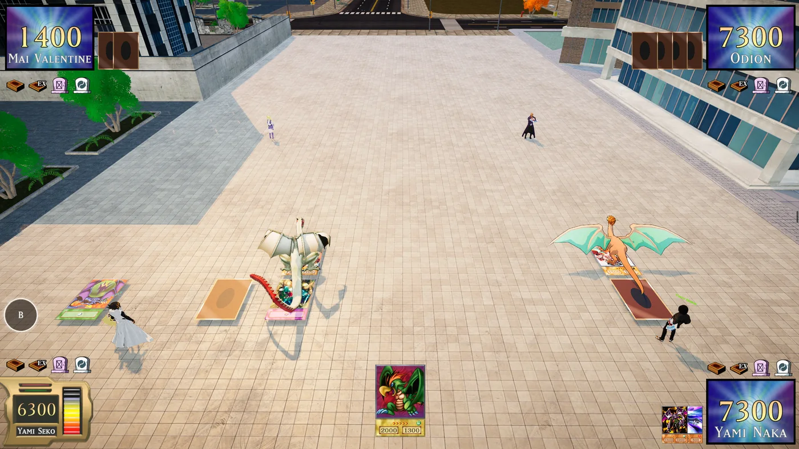

SE7EN
DMO ASSISTANT
Chaque carte, en français, en plein duel.
Pointe une carte dans DMO, appuie sur une touche : son effet s'affiche en français, directement par-dessus le jeu. Gratuit, pour toute la communauté.
DUEL MONSTERS ONLINE
Actuellement en développementYu-Gi-Oh! DMO est un fangame multijoueur créé par des fans, actuellement en développement, qui permet de faire des duels en ligne beaucoup plus réalistes.
- Des duels en ligne beaucoup plus réalistes
- Une collection de cartes à agrandir au fil des parties
- Des decks à construire et à améliorer
- Mais des cartes et des effets en anglais : c'est là que Se7en intervient

Joue sans buter sur l'anglais
Dans DMO, les cartes sont en anglais et leurs effets sont parfois longs et techniques. Se7en DMO Assistant les lit à ta place et te les explique en français, au moment où tu en as besoin.
cartes reconnues
Par leur illustration, même quand le nom n'est pas affiché. L'appli apprend aussi les illustrations propres à DMO.
les textes officiels
Quand une traduction officielle existe, c'est elle qui s'affiche, avec les bons termes : Invocation Spéciale, Cimetière, Effet Rapide…
pour lire une carte
Pas besoin de quitter le jeu pour chercher sur Internet : la réponse apparaît à côté de la carte.
Tu vises. Tu comprends.
Magicien Sombre
Le magicien ultime en matière d'attaque et de défense.
Trois gestes, c'est tout
Lance l'appli
Ouvre Se7en DMO Assistant, puis DMO en plein écran fenêtré. Un court tutoriel te guide la première fois.
Vise une carte
Pointe la carte avec ta souris et appuie sur F8. Ou active le mode auto avec F10 : la traduction suit ta souris.
Lis en français
L'effet apparaît sur le jeu, à côté de la carte. Les clics passent au travers, tu continues ton duel normalement.
Bien plus qu'un traducteur
Ta collection, tes decks, des conseils : tout ce qu'il faut pour progresser dans DMO.
Reconnaissance par l'illustration
L'appli compare la carte à près de 15 000 illustrations. Elle redresse les cartes posées en perspective sur le terrain et lit l'ATK/DEF pour ne pas se tromper.
Overlay sur le jeu
La traduction s'affiche par-dessus DMO, sans gêner tes clics. Invisible sur tes enregistrements, sauf si tu le veux.
Ta collection en une capture
Capture ton inventaire : toutes les cartes sont reconnues d'un coup, avec leur quantité.
Le deck parfait, expliqué
Donne ton deck et ta collection : l'appli garde le cœur de ta stratégie, remplace les cartes faibles et t'explique chaque choix, avec tes chances d'ouvrir la bonne main.
Import depuis Internet
Une capture d'un deck trouvé en ligne, ou une liste écrite : l'appli reconnaît les cartes et crée le deck pour toi.
Traduction hors ligne
Les cartes sans texte français officiel sont traduites directement sur ton PC, sans rien envoyer sur Internet.
Télécharge une fois. Les nouveautés arrivent toutes seules.
À chaque lancement, l'appli vérifie s'il existe une nouvelle version. Si oui, elle l'installe en quelques secondes et t'explique ce qui a changé. Tu n'as jamais besoin de la retélécharger.
- Reconnaissance des cartes plus fiable en jeu
- Nouvel onglet Contact
- Animation d'ouverture Se7en
Tout se fait au clavier
Par la communauté française, pour la communauté française
Se7en DMO Assistant est fait uniquement pour les joueurs francophones de Yu-Gi-Oh! DMO. C'est un projet de fan, gratuit et sans aucun but lucratif : pas de vente, pas d'abonnement, pas de publicité, aucun don demandé.
Questions fréquentes
C'est quoi Yu-Gi-Oh! DMO ?
C'est vraiment gratuit ?
Est-ce que ça modifie le jeu ?
Pourquoi Windows dit « Windows a protégé votre ordinateur » ?
Une carte est mal reconnue, je fais quoi ?
Ça marche sur Mac ou sur téléphone ?
Les raccourcis ne marchent pas en jeu.
C'est l'heure du duel !
Télécharge le fichier, décompresse-le et lance « DMO Assistant.exe ». Rien d'autre à installer.